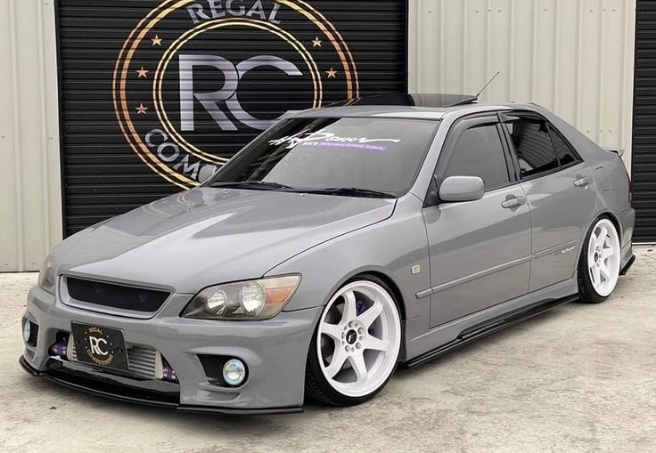
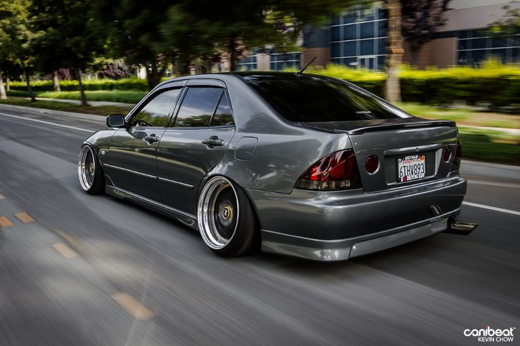
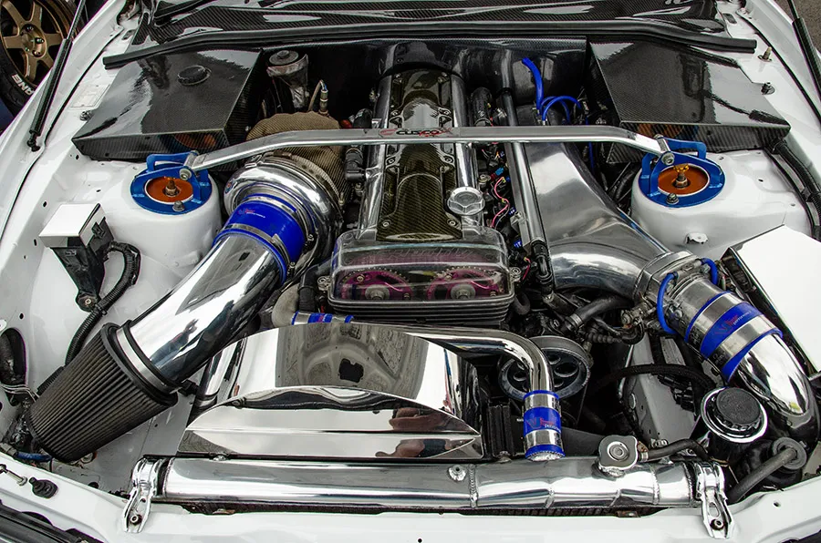
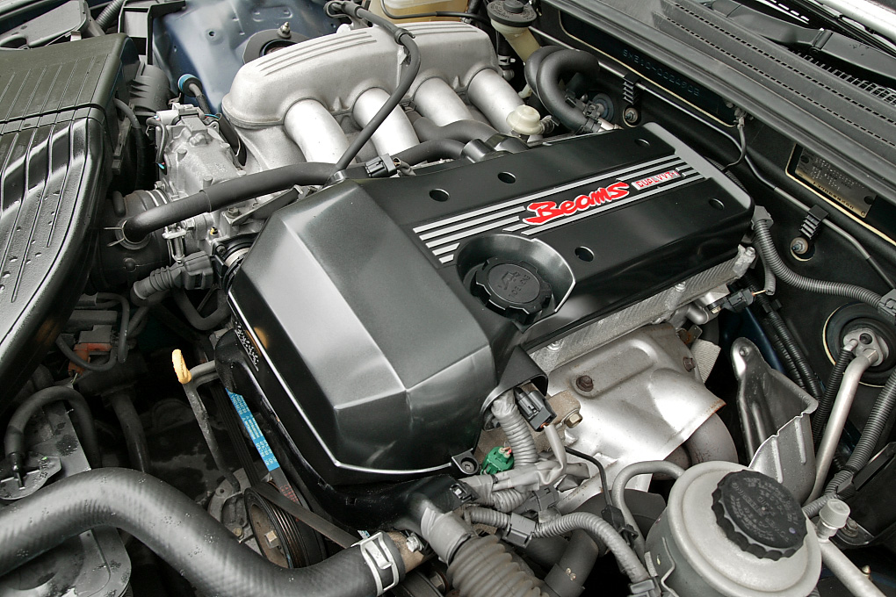

-
Styl i Design:
Altezza charakteryzuje się dynamicznym i aerodynamicznym designem, który nadaje mu sportowy wygląd. Jego muskularne nadkola, agresywnie ukształtowany przedni zderzak i charakterystyczne tylne lampy sprawiają, że jest to samochód łatwo rozpoznawalny na drodze. Model ten wyróżnia się także charakterystyczną chromowaną listwą na tylnej klapie, która jest jednym z jego charakterystycznych elementów.
  -
Silnik:
Altezza był dostępny z różnymi jednostkami napędowymi, w zależności od wersji i rynku docelowego. Najbardziej znane są wersje z silnikiem 3S-GE (bezpośredni wtrysk benzyny, pojemność 2.0 litra) oraz z silnikiem 2JZ-GE (wtrysk pośredni, pojemność 3.0 litra). Silniki te oferowały różne poziomy mocy i osiągów, umożliwiając klientom wybór w zależności od preferencji.
  -
Wydajność i prowadzenie:
Altezza oferuje dynamiczną jazdę i precyzyjne prowadzenie. Dzięki dobrze wyważonej konstrukcji i niezależnemu zawieszeniu na wszystkich kołach, samochód zapewnia stabilność i przyczepność nawet podczas dynamicznej jazdy. Modele wyposażone w silnik 2JZ-GE charakteryzują się imponującymi osiągami, co sprawia, że są szczególnie atrakcyjne dla entuzjastów motoryzacji poszukujących sportowego wrażenia z jazdy.
-
Wnętrze i wyposażenie:
Wnętrze Altezzy cechuje się nowoczesnym i ergonomicznym designem. Kabina pasażerska oferuje komfortowe miejsca dla kierowcy i pasażerów, a wysokiej jakości materiały wykończeniowe podkreślają sportowy charakter pojazdu. Altezza był wyposażony w różne nowoczesne funkcje i systemy, w zależności od wersji i wyposażenia. Opcjonalnie dostępne były m.in. systemy nawigacji, klimatyzacji automatycznej czy systemy audio.
Toyota Altezza, choć może być mniej znana niż niektóre inne modele sportowe Toyota/Lexus, nadal cieszy się uznaniem wśród fanów motoryzacji dzięki swojemu charakterystycznemu designowi, solidnej konstrukcji i dynamicznej jazdzie.